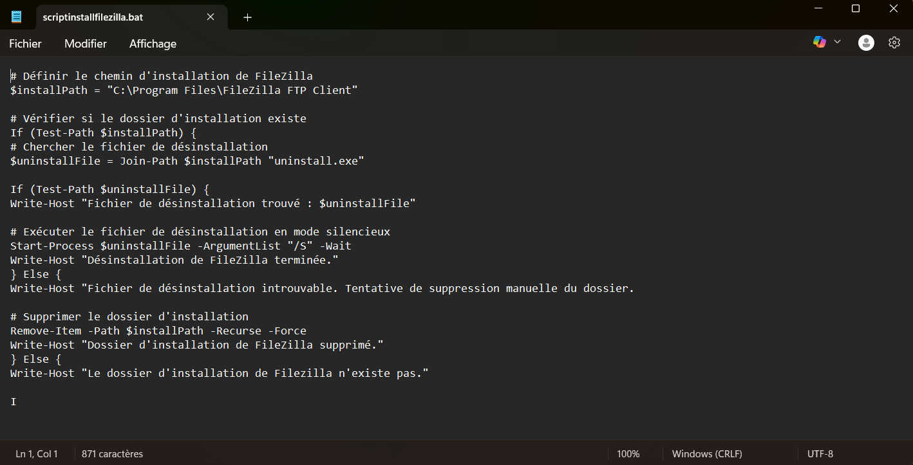
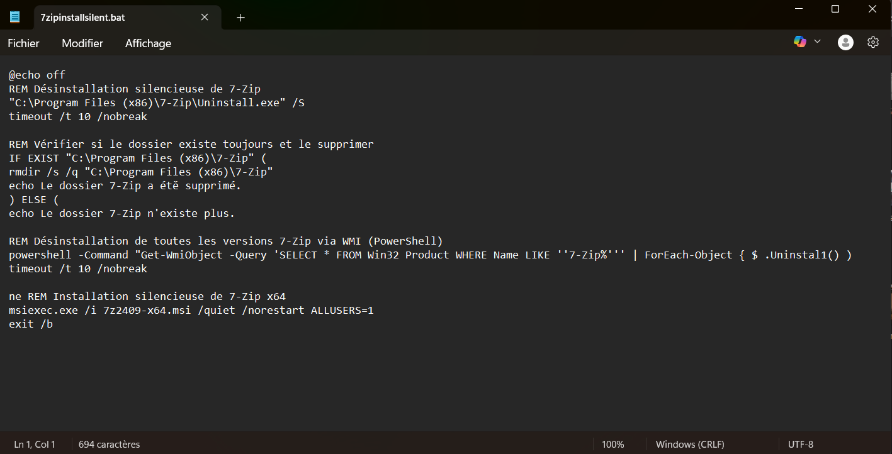

Stage de premère année
Présentation du contexte :
Durant mon stage j'ai eu l'opportunité de travailler sur un projet de développement web pour la section SEGPA du collège Emile Combe. L'objectif principal était de concevoir un site web vitrine pour présenter et vendre les produits en bois fabriqués par les élèves.
Semaine de stage :
Semaine 1:
Démarrage du Projet : Introduction au projet avec une réunion de lancement pour comprendre les objectifs et les attentes du client.
Mise en Place de l'Environnement de Travail : Installation de WAMP serveur pour héberger localement le projet.
Création des Pages Web : Développement initial des pages en PHP et HTML selon la maquette fournie par la section SEGPA, en utilisant l'architecture MVC
Travailler en mode projet : Utilisation de Trello pour répartir les tâches et suivre l'avancementdu projet.
Semaine 2:
Changement de l'Architecture : Changement de l'architecture MVC vers une architecture simplifiée de M. Ornech.
Ajustement des fichiers : Création et ajustement des fichiers PHP et HTML pour s'adapter à la nouvelle architecture et ajout du routeur.
Semaine 3:
Début du CSS : Mise en forme du site web en utilisant du CSS et Bootstrap comme framework CSS pour faciliter le design.
Ajustement du site : Ajustement des fichier CSS et HTML pour rendre le site responsive.
Semaine 4:
Ajout des pages inscription et connexion : Développement des pages d'inscription et de connexion pour permettre aux utilisateurs de créer des comptes et de se connecter.
Semaine 5:
Fonctionnalité Panier : Création de la page panier permettant aux utilisateurs de sélectionner et d'ajouter des produits qu'ils souhaitent acheter.
Intégration des produits dans la Base de Données : Assurer que les produits ajoutés au panier sont correctement enregistrés et gérés dans la base de données.
Semaine 6:
Débogage : Terminer le développement de la page panier et corriger les erreurs de code.
Présentation du Projet :Présentation du projet final à la section SEGPA et aux professeurs du collège Emile Combe. Cette présentation a permis de montrer les fonctionnalités du site et de recueillir des retours pour d'éventuelles améliorations.
Compétences développées
Développement back-end : PHP, architecture MVC, gestion de sessions, routage.
Développement front-end : HTML, CSS, Bootstrap, design responsive.
Gestion de projet : travail en autonomie, planification avec Trello, réunions clients.
Travail en équipe et communication : compréhension des besoins utilisateurs et présentation orale du projet.
Stage de deuxième année
Présentation du contexte :
Lors de mon stage de deuxième année, j'ai eu l'opportunité de rejoindre l'entreprise Lea Nature à Périgny, où j'ai contribué à différents projets. Parmi ceux-ci, j'ai développé des scripts d'installation de logiciels déployés via SCCM, et participé à la gestion de l'infrastructure informatique.
Semaine de stage :
Semaine 1:
Découverte de l'entreprise : Présentation des différents services informatique tels que le MCO1,MC02 et le bureau d'Intégration.
Mise en Place de mon poste de travail : installation d'un windows 10 sur mon poste et des logiciel nécessaire pour la suite de mon stage.
Présentation des logiciels : Introduction aux différents outils utilisés par les services informatiques, comme Sami, utilisé pour traiter les tickets créés par les collaborateurs, et SelfHelp, qui sert à gérer les procédures opératoires.
Module cybersécurité : J'ai pu suivre le module de cybersécurité, obligatoire pour tous les nouveaux employés depuis 2022, et j'y ai ajouté un nouveau type d'attaque informatique.
Semaine 2:
Travail sur selfhelp : Création de nouveaux modes opératoires et correction de certains grâce à SelfHelp Studio, ainsi qu'injection des informations sur SAMI pour aider les collaborateurs.
Gestion de la base de données : Gestion de la base de données SQL des employés afin de suivre qui a effectué la formation cybersécurité.
Semaine 3:
Travail sur les workflows opérationnels : Travail sur les workflows (qui sont similaires à un développement de type Scratch) pour automatiser la création de tickets lorsqu'un collaborateur s'absente pendant plus de 2 mois.
Recherche de fichiers MSI : Recherche des fichiers MSI de chaque logiciel dans la base de données pour un meilleur déploiement via SCCM.
Semaine 4:
Nouveau type d'attaque : Ajout d'un nouveau type d'attaque, le squishing, attaque par QR code, dans le module cybersécurité.
Réunion Retex : Recherche des incidents ouverts durant le mois de janvier.
Mise à jour des logiciels : Ajout des nouvelles versions des logiciels déployés dans SCCM.
Semaine 5:
Création de scripts : Création de scripts batch pour automatiser l'installation des nouveaux logiciels et des mises à jour.
Mise à disposition des utilisateurs un service informatique


Réparation de l'Info Centre : Réparation de l'Info Centre, un outil permettant d'installer les logiciels sur les nouveaux postes.
Semaine 6:
Déploiement des logiciels : Déploiement des logiciels via SCCM (System Center Configuration Manager) à l'aide de fichiers batch déjà créés, d'abord sur des postes tests, puis sur tous les postes de Lea Nature si le déploiement est concluant.
Effacement des ordinateurs : Effacement des données sur les ordinateurs du parc informatique afin qu'ils puissent être revendus à des "brokers".
Nombre de licences attribuées : Recherche dans la base SCCM pour savoir combien de licences ont été attribuées aux utilisateurs pour chaque logiciel.